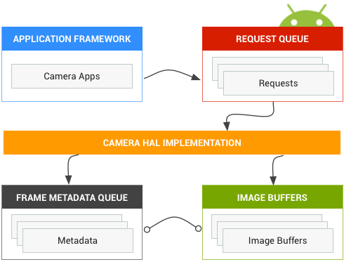

Android's camera Hardware Abstraction Layer (HAL) connects the higher level camera framework APIs in android.hardware.Camera to your underlying camera driver and hardware. Android 5.0 introduced a new, underlying implementation of the camera stack. If you have previously developed a camera HAL module and driver for older versions of Android, be aware of significant changes in the camera pipeline.
Note: The new camera HAL is in active development and can change at any time. This document describes the high-level design of the camera subsystem; for details, see Camera Version Support.
Version 1 of the camera subsystem was designed as a black box with high-level controls and the following three operating modes:
Each mode has slightly different and overlapping capabilities. This made it hard to implement new types of features, such as burst mode, since it would fall between two of these modes.
Figure 1. Camera components
Android 7.0 continues to support camera HAL1 as many devices still rely on it. In addition, the Android camera service supports implementing both HALs (1 and 3), which is useful when you want to support a less-capable front-facing camera with camera HAL1 and a more advanced back-facing camera with camera HAL3.
Note: Camera HAL2 is not supported as it was a temporary step on the way to camera HAL3.
There is a single camera HAL module (with its own version number), which lists multiple independent camera devices that each have their own version number. Camera module 2 or newer is required to support devices 2 or newer, and such camera modules can have a mix of camera device versions (this is what we mean when we say Android supports implementing both HALs).
The aim of the Android Camera API redesign is to substantially increase the ability of applications to control the camera subsystem on Android devices while reorganizing the API to make it more efficient and maintainable. The additional control makes it easier to build high-quality camera applications on Android devices that can operate reliably across multiple products while still using device-specific algorithms whenever possible to maximize quality and performance.
Version 3 of the camera subsystem structures the operation modes into a single unified view, which can be used to implement any of the previous modes and several others, such as burst mode. This results in better user control for focus and exposure and more post-processing, such as noise reduction, contrast and sharpening. Further, this simplified view makes it easier for application developers to use the camera's various functions.
The API models the camera subsystem as a pipeline that converts incoming requests for frame captures into frames, on a 1:1 basis. The requests encapsulate all configuration information about the capture and processing of a frame. This includes resolution and pixel format; manual sensor, lens and flash control; 3A operating modes; RAW->YUV processing control; statistics generation; and so on.
In simple terms, the application framework requests a frame from the camera subsystem, and the camera subsystem returns results to an output stream. In addition, metadata that contains information such as color spaces and lens shading is generated for each set of results. You can think of camera version 3 as a pipeline to camera version 1's one-way stream. It converts each capture request into one image captured by the sensor, which is processed into:
The set of possible output Surfaces is preconfigured:
A request contains all desired capture settings and the list of output
Surfaces to push image buffers into for this request (out of the total
configured set). A request can be one-shot (with capture()), or it
may be repeated indefinitely (with setRepeatingRequest()). Captures
have priority over repeating requests.
Figure 2. Camera core operation model